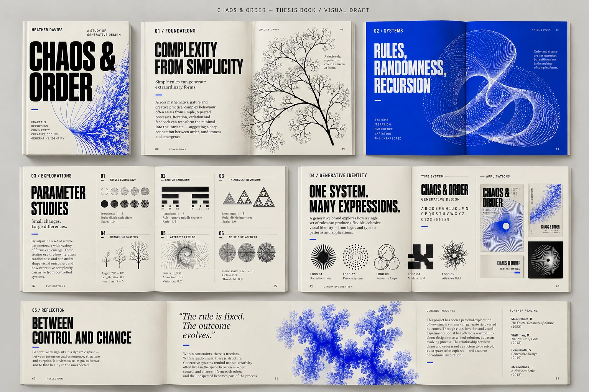
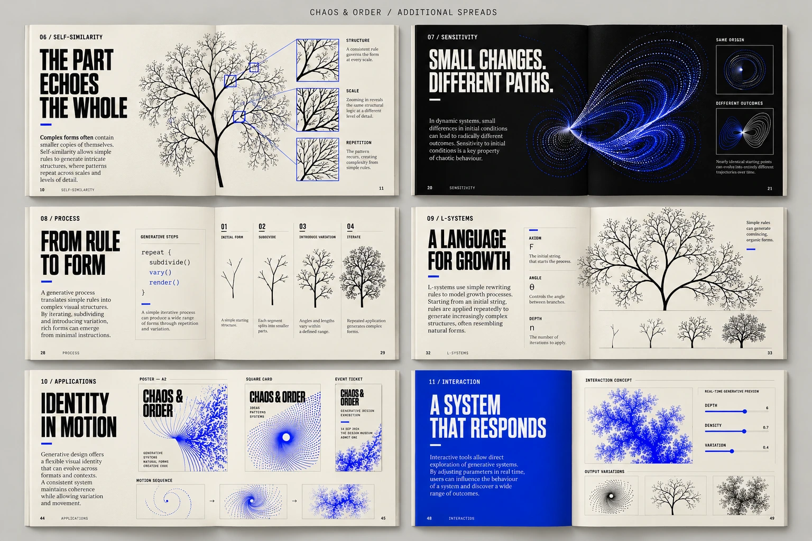

Typography
Condensed display headings establish a strong hierarchy. Serif reading text and compact technical labels support essays and experimental notes.
THESIS EXPLORATION / EDITORIAL DESIGN
Simple rules.
Infinite possibilities.
A book concept exploring how fractals, recursion, and controlled variation can become a visual language for editorial design and generative identity.

01 / THE QUESTION
The research notes connect mathematical patterns with design: self-similarity, feedback, emergence, and the tension between order and unpredictability.
The book gives those ideas a visual form. Repeated motifs establish continuity, while changing scale, density, and composition introduce variation across the spreads.
02 / VISUAL SYSTEM
Condensed display headings establish a strong hierarchy. Serif reading text and compact technical labels support essays and experimental notes.
Ivory and black give the research room to breathe. Cobalt creates chapter breaks and emphasizes the generative imagery.
Branching structures, recursive circles, and evolving patterns connect the research pages with a proposed identity system.

03 / BOOK SEQUENCE